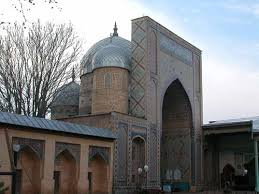
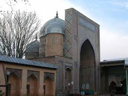

Imom al-Buxoriy ziyoratgoh majmuasi Samarqand viloyatida joylashgan qadimiy memoriy yodigorliglardan biri, Islom olamida juda katta hurmat bilan tilga olinadigan Imom al-Buxoriyning qabrlari joylashgan ziyoratgohdir.[1] Majmua Samarqand viloyatining Hartang qishlogʻida joylashgan fayzli maskan hisoblanadi. Majmuaning oldingi yani oʻn oltinchi asrdagi koʻrinishida bir kichik maqbara uning oldida masjid va hovliga bir necha daraxtlar ekilib qoʻyilgan boʻlgan. Keyinchalik 1997- yil 28-aprelda Oʻzbekiston Respublikasi vazirlar maxkamasi tomonidan chiqarilgan qonun asosida Imom al-Buxoriyning hijriy 1225 yilligini koʻtarinki kayfiyatda nishonlashni tashkil etish haqidagi qaroriga asosan majmua butunlay qayta taʼmirlandi va qoʻshimcha yodigorlik majmuasi qurilgan.Imom al- Buxoriy oʻz umrini ilm oʻrganish uchun sarflagan buyuk va ulugʻ ulamolardan biridir, ularni ishlarini[2] yanada koʻproq oʻrganish va ular yotgan zioratgohlarni obodonlashtirish ishlari olib borildi. Imom al-Buhoringning eski ziyoratgohi oʻrnida yangi majmua 1998-yilda qurib bitkazildi.[3] Bu majmuaning qurilishida viloyatlardan kelgan eng mohir ustalar mehnat qilishgan masalam: Andijon,Toshkent, Qoʻqon va boshqa shaharlardan ustlar kelishgan. Bu majmua ziyoratchilar uchun muqaddas maskan va qolaversa „Hayit“ bayramlarida kelib Hayit namozlarini va juma namozlarini oʻqish uchun ulugʻ maskan hisoblanadi. Imom al-Buhoriy majmuasini qurilishida uning gumbazlariga Oʻzbek milly hunarmandchiligi asosida bezaklar berilgan. Uning oʻrta qismida „oniks“ toshidan tayyorlanga sagʻana joylashtirilgan. Maqbaraning ichki qismida allomaning qabrlari sagʻana ostida joylashgan. Majmuaning hovlisida, chap tarafda masjid qurilgan, uning honaqohlari va va peshayvonlarning umumiy maydonlari 786kv/km, va 214 kv/m tashkil etadi. Umumiy hisobda 1500 ta namozxonni oʻz ichida sigʻdira oladi. Maqbara kutubxonasida Islom diniga oid boʻlgan qoʻlyozma asarlar saqlanadi. Hadis ilmini oʻranuvchilar uchun majmuada shart sharoitlar yaratilgan ."Dorul haqio " nomi bilan ataluvchi hadislarni oʻrganuvchi markaz hisoblanadi, u maqbaraning orqa tarafida joylashgan.
Yetti pirning eng ulug‘i, xojagon tariqatining asoschisi bo‘lgan ushbu zot dunyo muslimlari tomonidan Xojai Jahon deb sharaflangan. Abduxoliq G‘ijduvoniyga ajdodlarimizning mehr-muhabbati kuchli bo‘lgan. Xususan, ma’rifatparvar hukmdor Mirzo Ulug‘bek uning sharafiga madrasa, kutubxona va toshhammom qurdirgan. Ushbu maskan, afsuski, mustabid tuzum davrida oyoqosti qilingan. Madrasa kimyoviy o‘g‘it saqlanadigan omborxonaga, qabr atrofi somon bozoriga aylantirilgan. Istiqlol tufayli bu kabi noxush holatlar barham topdi. Ziyoratgoh obod etildi. Prezidentimizning 2017 yil 1 iyuldagi “Abduxoliq G‘ijduvoniy tavalludining 915 yilligini va Bahouddin Naqshband tavalludining 700 yilligini nishonlashga tayyorgarlik ko‘rish hamda uni o‘tkazish to‘g‘risida”gi farmoyishi bilan bu boradagi ishlar ko‘lami yanada kengaydi. Hozirgi kunda majmua to‘liq rekonstruksiya qilinmoqda. Yo‘laklarga maxsus toshlar yotqizilib, yon-atrof obodonlashtirilyapti. Yetti pirning barcha qadamjosida bo‘layotgani kabi bu yerda ham katta bunyodkorlik ishlari olib borilmoqda. Usta Muzaffar Mirzayev ziyoratgoh hududida uch gumbazli darvozaxona, maqbara, minora, hovuz, kushxona va boshqa inshootlarga yondosh qilib hunarmandlar rastalari ham tiklanayotganini ta’kidladi. — Piri komilning ezgu ishlari bugun ham avlodlari tomonidan davom ettirilayotgani ramzi sifatida mazkur imoratlarda hunarmandlar ipakdan turli qimmatbaho matolar, atlasu adraslar, gilamlar to‘qishi va ularning savdosi bilan shug‘ullanishi uchun barcha imkoniyat yaratiladi, — deydi usta. — Majmuada sayyohlar uchun ham ko‘rsa havas qilgulik qulayliklar muhayyo etiladi. Jumladan, zamonaviy mehmonxona qad rostlaydi. Bu ishlar yakuniga yetgach, ushbu hududning sayyohlik salohiyati keskin oshadi. Negaki, qadamjo yonida necha ming yillik tarixga ega ko‘hna Qo‘rg‘on qishlog‘i bor. Bu yerda fransiyalik mutaxassislar bilan hamkorlikda arxeologik qazishma ishlari olib borilyapti. Topilmalar jamoatchilikning bu yerga qiziqishini yanada oshirishi, shubhasiz. Romitan tumanining Samos qishlog‘i tomon yursangiz, yana bir tarixiy majmua qarshingizdan chiqadi. Bu yerda ma’naviy komillik timsoliga aylangan yana bir mo‘tabar zot — Muhammad Boboyi Samosiy qabri va maqbarasi bor.
 
